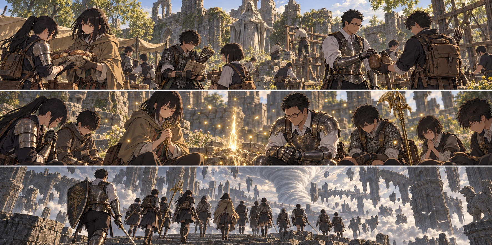

DAY86 / TURN1−96
帰って、また先へ。

先生「八十九日には戻る。ここまで来た道を、戻れる道のままにする」
【DAY86｜朝、エレの教会】戻った先生が最初に聞いたのは、槌の音だった。誠が壁際で石を据え直し、凛が干した肉を裏返している。遠征の話を聞こうと集まった生徒たちは、十三人分の返事が揃うとようやく笑った。誰も減っていない。その確認を、先生も一緒に数えた。
翼が食料の包みを差し出した。「四日分です。今日食べる分から順に」。先生は重さを両腕に受け、遠くの敵を倒せたことと、この包みを用意してもらえたことが一本の道で繋がっているのを感じた。食料は五十二食分を主力へ移す。新しく湧いた備蓄ではなく、教会で皆が稼いで、作ったものだった。
矢を百本買い足し、花と千夏に五十本ずつ渡す。水は汲んだ分をすべて瓶へ溜めず、その日の飲用へ先に回した。持てる量には限りがある。修繕では先生の盾の縁を整え、悠と拓海の杖を手入れした。祝福に触れれば、木や鉄の傷まで消えるわけではなかった。
【勝利を、次に使える力へ】ルーンの大半を十三人に配分した。先生は七十から八十へ。生命力と持久力に振る。速く勝つための火力を、自分一人に寄せる選び方ではない。皆が攻撃できる時間を、自分が立って作る。その仕事を、これからも引き受けるためだった。
他の十一人は五十四から六十へ。葵は六十から六十五にし、こちらも生命力と持久力を補った。すでに使える大きな祈りを、最後まで届ける身体が欲しい。葵は一度膝を曲げてから立った。「少しだけ、荷物が軽いです」。紬は笑い、「荷物は増えてるよ」と包みを指した。
円卓へは先生が一人で行った。以前に招かれた者として、鈴玉を差し出す。売られるようになったのは上位の鍛石だった。先生は並んだ品と手元の剣を見比べ、買うのを止めた。そこへ届くまでの素材がない。高い段だけを埋めても、足りない段を飛び越せるわけではなかった。
【陽太の槍】教会へ戻ると、陽太が皆から離れた空き地に立った。共同の砥石の小刀で、槍に黒炎の渦を宿す。盾を背へ回し、両手で柄を握る。黒い炎が足元から巻き上がった。振り終えた陽太は、すぐに盾へ手を伸ばした。
「これ、ずっと前で使うのは無理ですね」。炎が出るまでの動作は長い。構えている間に殴られれば、盾は前にない。「私が向きを取った時だ。無理ならいつもの槍でいい」。先生がそう言うと、陽太は頷いた。新しい技を手に入れたからといって、それだけを使う者にならなくてよかった。
【帰還の約束】「八十九日には戻る。ここまで来た道を、戻れる道のままにする」。先生は留守を預かる結衣と翼にそう伝えた。九十日の赤月まで、残る夜は少ない。教会組は壁の補修と雨支度、第三隊は既知の範囲で狩りと取水を続ける。未知の土地へ、皆を追わせることはしない。
祭壇へ戻れたのは、昨日そこへ自分の足で辿り着いた十三人だけだった。休息して瓶と術を整える。扉の先には、空へ張り出した石の道が続いていた。神肌を倒しても、崩れた世界は道を直してくれない。蓮が先の足場を指し、花が後ろの人数を確認した。
【足場の先へ｜2d6＝5・3＋4＝12】獣人が二体、細い通路へ出た。先生は一体を盾の前へ寄せ、もう一体に陸が横から当たった。戦いながら下へ押し進まず、足場の残っている所で倒す。陽太は黒炎を使わなかった。槍の先を通路へ向け、弓と術が届く隙間を残した。新しい力を温存するのも、今日覚えた使い方だった。
竜の死骸のそばに、別の騎士が立っていた。目が合う前に進路を変える。戦利品を探す視線を、次に足を置く石へ戻した。落ちたら、鎧もレベルも頼りにならない。先生は最後尾へ回り、皆が段差を降り終えるまで待った。
屋根へ辿り着くと、風が急に強くなった。十三人で祝福を解放し、各自の到達を登録して休んだ。遠くには赤い雷が走っている。今日は追わない。明日は、あの雷を越えて大橋へ向かう。
【教会の仕事｜2d6＝3・6＋4＝13】第三隊はいつもの範囲で三頭を持ち帰った。主力が戻った朝にも、出ていった昼にも、教会の仕事は止まらなかった。誠たちは壁の低い隙間を塞ぎ、通路には物を積まないようにした。強い壁と、外へ出られない壁は違う。赤月を迎える部屋を、毎日少しずつ作り直す。
【DAY86｜夕】新たな死傷者なし。財布は四千六十四ルーン、矢は四百二十六本。食料は全体で百二十二食分あり、うち三十九食分が主力の手元にある。戦うための補給と、帰るための祝福を増やした一日だった。あと十三日。そのうち一日は、必ず教会を守るために使う。
今回の判定記録
| 判定 | 出目 | 補正 | 合計 |
|---|
| rooftop | 5+3 | 4 | 12 |
| base | 3+6 | 4 | 13 |
抽選前の条件 · 抽選結果